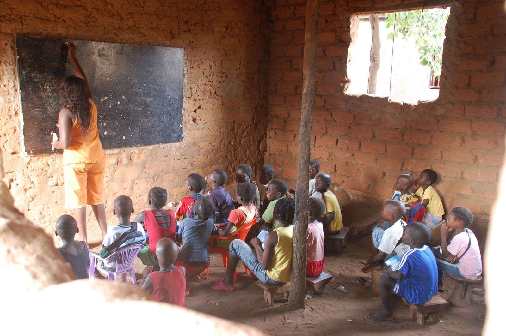

Contexto histórico
Os processos de independência na África começaram no início do século XX, com a independência do Egito. No entanto, foi apenas após a Segunda Guerra Mundial, com o enfraquecimento das potências europeias, que a maioria dos países africanos conseguiu conquistar sua independência.
Durante o conflito, as populações africanas foram convocadas a participar do esforço de guerra, e muitos africanos lutaram diretamente nos campos de batalha. Com o fim da guerra, esperava-se que essas contribuições resultassem em maior autonomia para os territórios africanos, mas isso não ocorreu. O sistema colonial foi mantido como antes.
Causas da Descolonização
Após a Segunda Guerra Mundial, a ONU passou a pressionar as potências imperialistas para que colocassem fim à colonização. Ao mesmo tempo, o mundo vivia o contexto da Guerra Fria — a disputa pela hegemonia global entre Estados Unidos (capitalismo) e União Soviética (socialismo). Ambos os blocos apoiavam movimentos de independência que mais se alinhavam com suas ideologias, buscando influenciar politicamente os novos países africanos.
Principais conquistas e impactos
Principais Conquistas
Os movimentos de independência africana levaram à expulsão dos colonizadores europeus e à criação de novos países. Inspirados pelo pan-africanismo, que valorizava a cultura africana e combatia o racismo e o colonialismo, esses movimentos conquistaram importantes vitórias: a Libéria foi o primeiro país africano a se tornar independente, em 1847; Gana foi o primeiro a se libertar do domínio europeu; o Marrocos se tornou independente em 1956; a Guiné Equatorial em 1968; e a Eritreia foi a última, em 1993.
Principais Impactos
Os impactos da independência incluem conflitos internos, guerras civis, desigualdades sociais, dificuldades para formar Estados estáveis e democráticos, persistência da influência colonial, disparidades no desenvolvimento e desafios na luta contra o apartheid.
Alguns Exemplos:
- Conflitos Internos
A saída dos colonizadores deixou muitos países sem estruturas políticas sólidas, levando a disputas pelo poder e guerras entre grupos étnicos ou facções políticas.
Exemplos: Guerra Civil da Nigéria, Angola, Moçambique, Ruanda e Sudão.
- Influência dos antigos coloniazadores
Alguns países continuaram dependendo dos seus antigos colonizadores, como é o exemplo da França e suas ex colônias, que gerou até um termo "Françafique", ou FrançÁfrica, se referindo a dependência das antigas colônias africanas em relação a França, que dificultava a soberania do países, e seu futuro desenvolvimento
Situação Atual da África e a Irrelevância da Descolonização

O custo da luta pela independência foi elevado, com guerras coloniais que resultaram na morte de milhões de pessoas e afetaram a capacidade produtiva dos países. Após a descolonização, a maioria dos países africanos entrou em guerra civil devido às divisões étnicas e ao fato de que povos historicamente inimigos passaram a viver nas mesmas fronteiras.
Além disso, a disputa ideológica entre capitalismo e socialismo durante a Guerra Fria também contribuiu para a fragmentação política, com diferentes grupos tentando tomar o poder. Embora os antigos colonizadores tentassem manter as novas nações como aliadas, estabelecendo parcerias econômicas e comprando matérias-primas, isso não impediu que os países africanos continuassem a sofrer com as consequências da colonização.